2주 동안 올릴 첫 글 묶음입니다. 아직 실제 매장 사례가 없어서 지어낸 사례 · 숫자 · 후기는 넣지 않았습니다. 노란 표시는 운영자 본인 경험과 맞는지 확인하고 고칠 곳입니다.
올리기 전에
프로필 소개: 매장용 '고객의 소리'함 Say&Go를 만들고 있어요. 망하는 것보단 쓴소리 듣는 게 낫다고 생각해요. / 링크 칸: sayandgo.pages.dev
링크는 본문 말고 내 답글에: 본문에 외부 링크가 있으면 덜 퍼지는 경우가 많아서, 글을 올린 뒤 바로 내 글에 답글로 링크를 다는 식으로 썼습니다.
주제 태그는 글마다 1개: 자영업, 소상공인, 헬스장 중 글에 맞는 것 하나.
이미지 같이 올리기: 글마다 맞는 1080×1350 이미지(Threads에서 크게 보이는 4:5 세로)를 만들어 뒀습니다. 파일은 docs/threads/card1~7.png. 앱 화면은 테스트용 샘플이라 '예시 화면'이라고 적었습니다.
댓글은 그날 바로 답하기: 처음 한두 시간 안의 댓글 대화가 노출에 가장 중요합니다. 사장님 댓글은 기준 문서의 실제 고객 말로 모아 둡니다.
올리는 순서
순서
글
목적
1주 월
1. 왜 만들었나
소개, 핵심 문장
1주 수
2. 악플 걱정
가장 큰 반론 먼저 풀기
1주 금
3. 첫 매장 10곳 모집
가입 · 연락 받기 (목표 50곳의 시작)
2주 월
4. "네" 뒤에 숨은 말
손님이 말 안 하는 이유 공감
2주 수
5. 헬스장 사장님께
첫 공략 업종
2주 금
6. 사장님께 질문
댓글 · 실제 사장님 말 모으기
3주 월
7. QR은 안 바뀌어요
만드는 이야기, 포스터 소개
글
1. 왜 만들었나태그: 자영업1주 월
헬스장이나 병원 카운터 옆에 '고객의 소리' 함 하나씩 있잖아요. 그런데 거기에 종이 넣는 손님은 거의 못 봤어요. 펜이랑 종이를 찾아야 하고, 글씨나 넣은 시간 때문에 누가 썼는지 들킬 것 같으니까요.
그래서 휴대폰으로 쓰는 고객의 소리함을 만들었어요. 매장에 붙인 QR을 찍으면 가입 없이 익명으로 한마디 남길 수 있고, 그 글은 사장님 휴대폰으로 바로 와요.
망하는 것보단 쓴소리 듣는 게 낫다고 생각해서 만들었어요. 이름은 Say&Go예요.
(내 답글) 매장 등록은 여기서 할 수 있어요. sayandgo.pages.dev
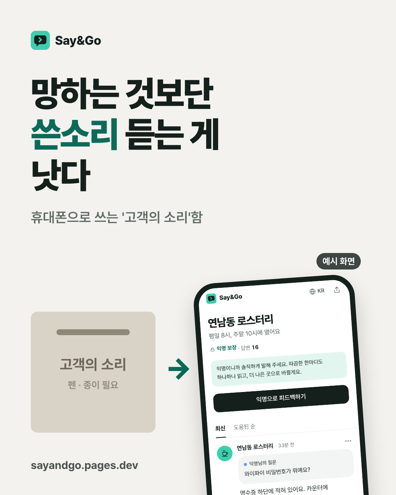
이미지 파일: docs/threads/card1.png
확인 "거의 못 봤어요"는 운영자 본인 경험일 때만 쓰세요. 아니면 "넣는 손님이 생각보다 적어요"로 바꾸세요.
2. 악플 걱정태그: 소상공인1주 수
익명으로 손님 의견을 받자고 하면 제일 먼저 드는 걱정이 악플이죠. 욕만 잔뜩 달리면 오히려 손해니까요.
Say&Go는 사장님이 답변을 단 글만 손님들에게 보여요. 답하지 않은 글은 사장님 혼자 보고 넘기면 돼요. 욕설은 쓰는 단계에서 막히고, 매장마다 금지어를 따로 정할 수도 있어요. 같은 사람이 계속 이상한 글을 남기면 차단하면 되고요.
쓴소리는 듣되, 그게 매장 앞에 그대로 걸리지 않게 만들었어요.
(내 답글) 어떻게 보이는지는 여기서 볼 수 있어요. sayandgo.pages.dev
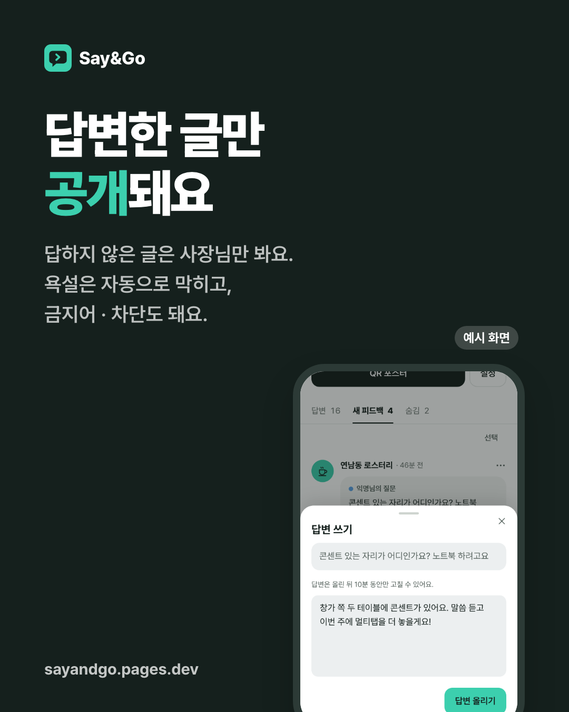
이미지 파일: docs/threads/card2.png
3. 첫 매장 10곳 모집태그: 자영업1주 금
Say&Go를 같이 써 볼 첫 매장 10곳을 찾고 있어요.
헬스장, 카페, 식당, 미용실처럼 손님이 좀 머물다 가는 매장이면 좋아요. 쓰는 데 돈은 들지 않아요. 나중에 광고를 붙여서 운영할 생각이에요.
가입하면 QR 포스터가 바로 이미지로 저장돼서 출력해 붙이기만 하면 돼요. [동네 이름] 근처 매장이면 제가 직접 가서 붙이는 것까지 도와드릴게요.
대신 2주쯤 써 보고 불편했던 점을 솔직하게 말해 주세요. 저도 쓴소리가 필요하거든요. 관심 있으시면 댓글이나 DM 주세요.
(내 답글) 가입은 여기서 바로 돼요. sayandgo.pages.dev
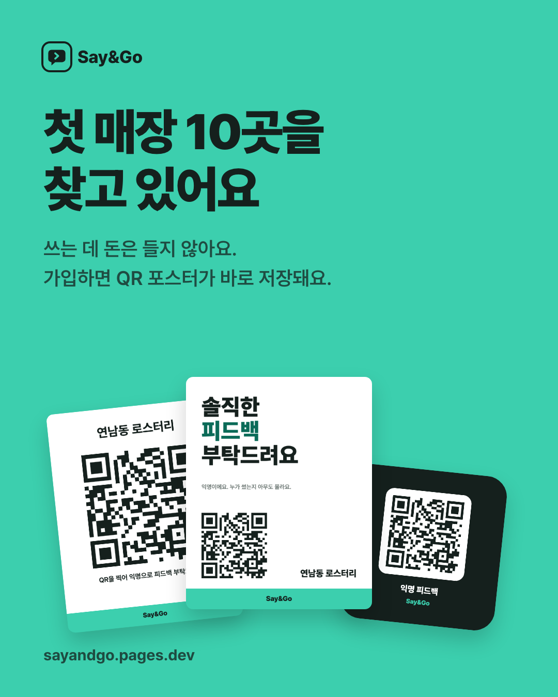
이미지 파일: docs/threads/card3.png
확인 직접 가서 도와줄 수 있는 동네 이름을 넣거나, 어렵다면 그 문장을 빼세요.
4. "네" 뒤에 숨은 말태그: 자영업2주 월
커피가 좀 탄 맛이 났어도, 계산할 때 "맛있게 드셨어요?" 하면 다들 "네" 하고 나가요. 그리고 그 손님은 조용히 다른 카페로 가요.
사장님은 이유도 모른 채 손님 한 명을 잃는 거고요. 얼굴 보고 "좀 탄 맛이 났어요"라고 말하기는 손님도 미안하고 어색하니까요.
이름도 연락처도 남지 않는 곳이 있으면 그 "네" 뒤에 있던 말을 들을 수 있어요. 손님은 편하게 쓰고, 사장님은 고칠 기회를 얻고요.
(내 답글) 손님이 쓰는 화면은 이렇게 생겼어요. sayandgo.pages.dev
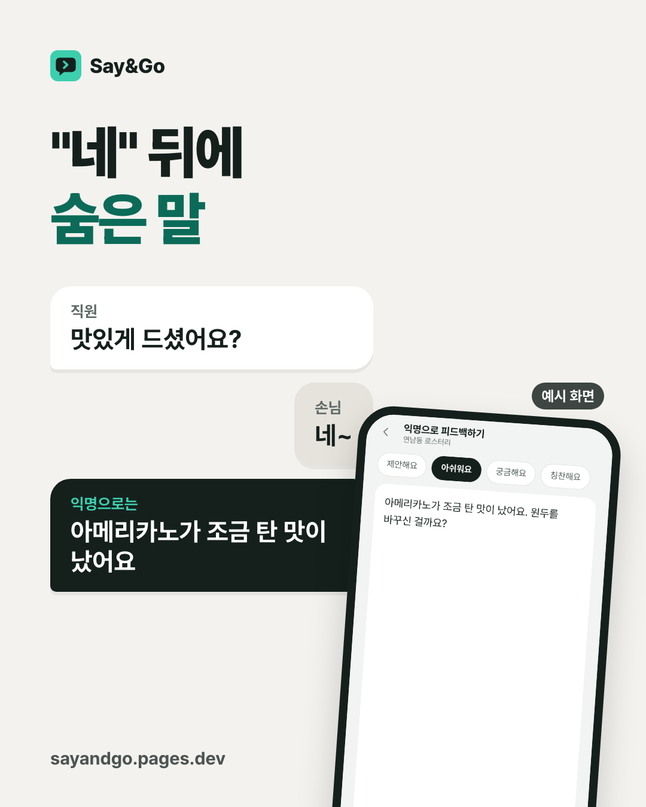
이미지 파일: docs/threads/card4.png
5. 헬스장 사장님께태그: 헬스장2주 수
헬스장 사장님이라면 회원한테 직접 듣기 어려운 말들이 있어요. 샤워실 수압이 약하다든지, 고장 난 기구가 몇 주째 그대로라든지, 음악이 너무 크다든지요.
회원이 재등록을 안 하고 조용히 그만두는 이유가 이런 데 있을 수도 있어요. 카운터의 고객의 소리함을 QR 하나로 바꿔 보세요. 운동 끝나고 휴대폰으로 가입 없이 바로 남길 수 있어요.
답을 달면 다른 회원들도 그 답을 볼 수 있어서, 고쳤다는 걸 자연스럽게 알릴 수도 있어요.
(내 답글) 헬스장도 업종 아이콘이 따로 있어요. sayandgo.pages.dev
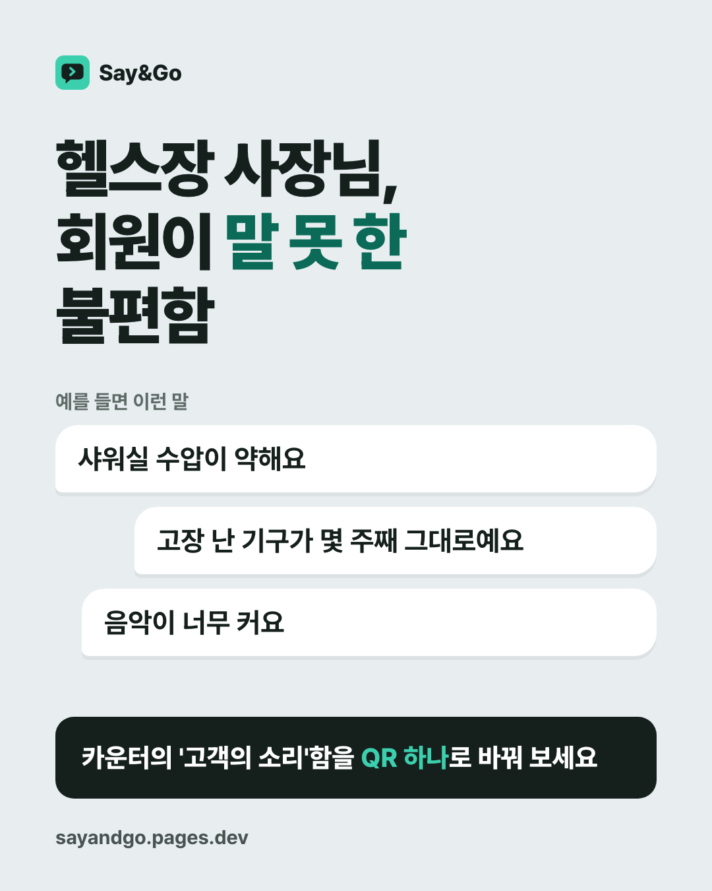
이미지 파일: docs/threads/card5.png
예시는 "이런 말이 있을 수 있다"는 뜻으로만 썼고, 실제로 받았다고 쓰지 않았습니다.
6. 사장님께 질문태그: 소상공인2주 금
사장님들께 하나 여쭤보고 싶어요.
손님한테 들은 쓴소리 중에, 듣고 고쳤더니 실제로 장사에 도움이 됐던 게 있으세요? 반대로 듣고 나서 오히려 힘만 빠졌던 말도 궁금해요.
Say&Go를 만들면서 어떤 말이 정말 도움이 되는지 알고 싶어서요. 댓글 남겨 주시면 하나하나 다 읽을게요.
(링크 답글 없이 올리기. 질문 글은 댓글 대화가 목적이라 링크를 빼는 게 좋아요)
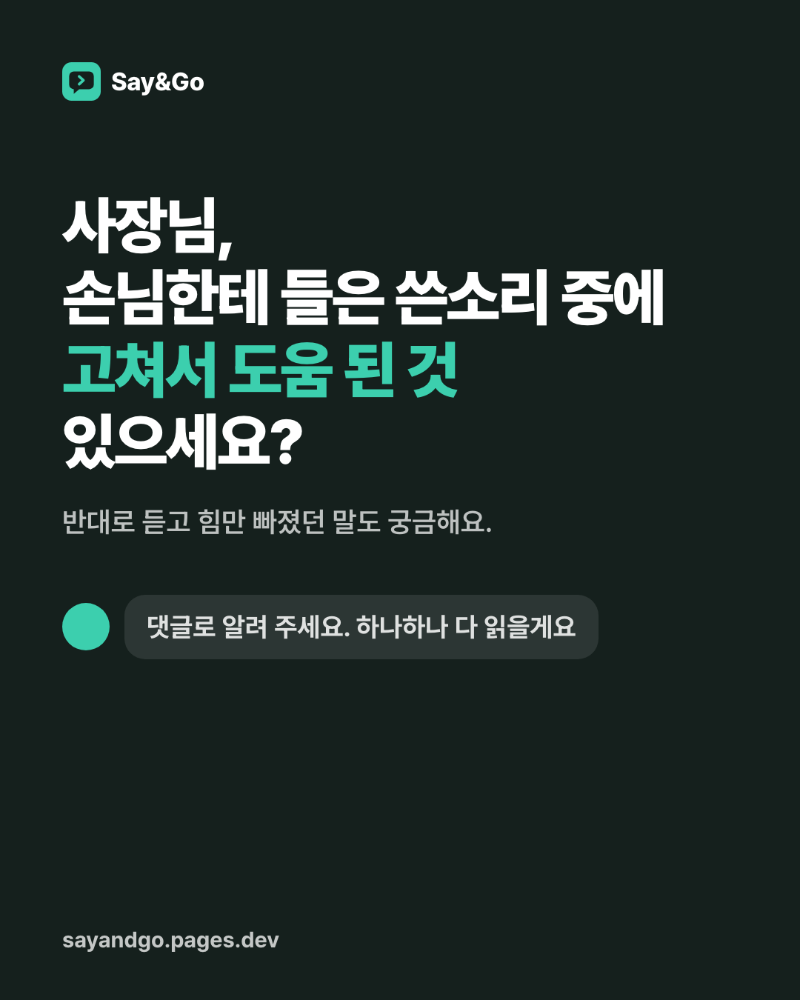
이미지 파일: docs/threads/card6.png
달린 댓글은 그대로 모아 기준 문서의 "고객이 쓰는 말"에 넣습니다. 다음 글 소재도 됩니다.
7. QR은 안 바뀌어요태그: 자영업3주 월
Say&Go를 만들면서 꼭 지키고 싶었던 게 하나 있어요. 한 번 붙인 QR은 다시 뽑을 일이 없게 하자는 거예요.
매장 이름을 바꾸거나 소개 문구를 고쳐도 QR과 링크는 처음 그대로예요. 포스터는 다섯 가지 모양으로 만들 수 있어요. 벽에 붙이는 큰 글씨형, 테이블에 세우는 텐트형, 계산대 가장자리에 붙이는 가로 띠형 같은 거요. 들어가는 문구도 매장 말투로 바꿀 수 있고요.
(내 답글) 포스터는 가입하면 바로 받을 수 있어요. sayandgo.pages.dev
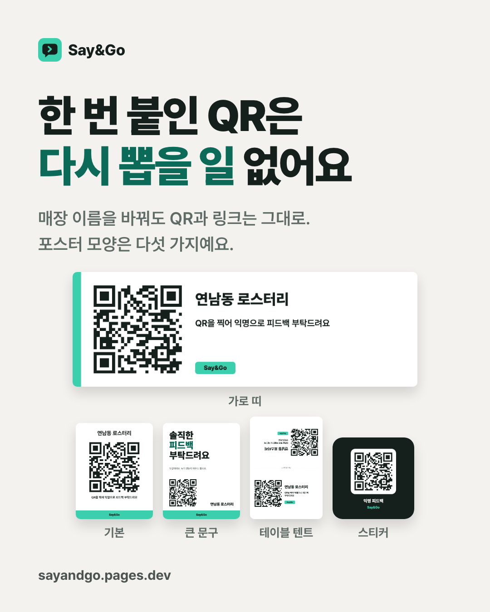
이미지 파일: docs/threads/card7.png
1번 글 다른 버전 5개 (맛 · 청결 · 공간 · 장사)
Threads 말투(음슴체 · 짧은 줄)로 쓴 버전. 1번 글 대신 쓰거나, 2주 차 이후 이어서 올릴 수 있어요. 지어낸 사례 · 숫자는 넣지 않았어요.
1-A. 맛태그: 자영업
솔직히 내 음식이 맛있는지 제일 모르는 사람은 사장인 것 같음
매일 먹으니까 입이 익숙해지고, 손님은 "맛있게 드셨어요?" 하면 일단 "네" 하고 나감
간이 셌는지, 양이 적었는지, 맛이 변했는지는 다시 안 오는 손님만 앎
그래서 만들었음. 테이블에 QR 붙여두면 손님이 가입 없이 익명으로 한마디 남기고, 그게 사장님 폰으로 바로 오는 거
망하는 것보단 쓴소리 듣는 게 낫잖아
(내 답글) 가입은 여기서 → sayandgo.pages.dev
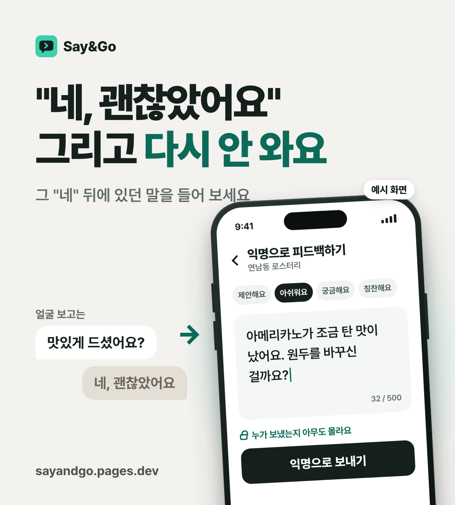
어울리는 이미지: docs/threads/card1-v1.png
1-B. 청결태그: 자영업
화장실 휴지 떨어져 있고, 테이블 끈적이고, 에어컨에서 냄새 나도 손님은 직원한테 말 안 함
속으로 "여기 좀 별로네" 하고 다음엔 딴 데 감
이유는 손님이 앎. 말을 안 해줄 뿐
얼굴 보고 "여기 이래서 다시 안 와요" 할 사람은 없으니까
카운터에 고객의 소리함이 있어도 사장님 바로 앞에서 쓰기는 애매하고, 써서 통에 넣고 나가는 것도 눈치 보임. 리뷰는 언제 써야 할지 타이밍도 애매하고
그래서 앉은 자리에서 QR 찍고 익명으로 바로 남길 수 있게 만들었음
리뷰는 모두가 보는 곳에 올라가는데, 이건 사장님한테만 감. 사장님이 답을 달기 전까진 아무도 못 봄
듣기 아플 수는 있음. 근데 모르고 망하는 것보단 낫잖아
(내 답글) 가입은 여기서 → sayandgo.pages.dev
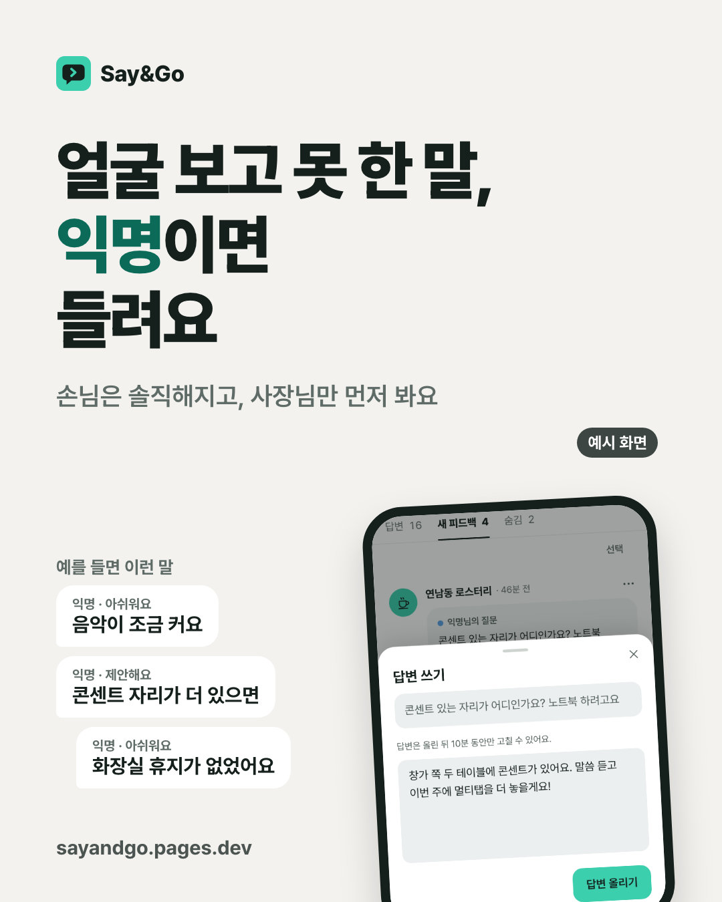
어울리는 이미지: docs/threads/card1-v4.png
1-C. 공간 · 인테리어태그: 자영업
의자 불편함, 조명 너무 어두움, 음악 큼, 콘센트 없음
이런 공간 불만이 은근 제일 말하기 애매함. 맛 얘기도 아니고 서비스 얘기도 아니라서
근데 이런 건 멀티탭 하나, 조명 하나로 바로 고칠 수 있는 것도 있음
문제는 아무도 말을 안 해준다는 거
손님이 QR 찍고 익명으로 한마디 남기면 사장님 폰으로 먼저 오는 고객의 소리함 만들었음
이름은 Say&Go
(내 답글) 가입은 여기서 → sayandgo.pages.dev
어울리는 이미지: docs/threads/card1-v4.png
1-D. 왜 장사가 안 될까태그: 자영업
오픈 땐 손님 꽤 왔는데 재방문이 없음
별점은 나쁘지 않은데 매출은 그대로
이럴 때 제일 답답한 게 이유를 모른다는 거
이유는 손님이 앎. 말을 안 해줄 뿐
얼굴 보고 "여기 이래서 다시 안 와요" 할 사람은 없으니까
그래서 그 말을 익명으로 들을 수 있는 폰 고객의 소리함 만들었음
매장에 QR 붙여두면 손님이 가입 없이 한마디 남기고, 사장님 폰으로 바로 옴
망하는 것보단 쓴소리 듣는 게 낫다고 생각해서 만듦. 이름은 Say&Go
(내 답글) 가입은 여기서 → sayandgo.pages.dev
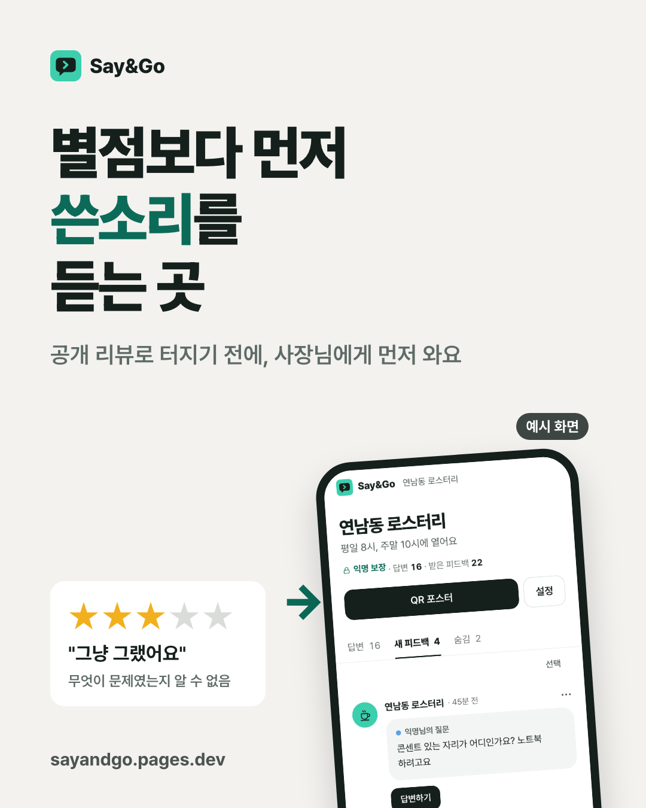
어울리는 이미지: docs/threads/card1-v2.png
1-E. 맛 · 청결 · 응대 · 가격 한 번에태그: 자영업
맛, 청결, 응대, 가격, 자리
손님이 다시 안 오는 이유는 대충 이 중 어딘가에 있는데, 이걸 사장한테 직접 말해주는 손님은 거의 없음
그래서 손님 대신 물어봐주는 QR 만들었음
테이블이나 카운터에 붙여두면 손님이 폰으로 가입 없이 익명으로 남김
사장님이 답 단 글만 공개돼서 악플 그대로 걸릴 걱정도 덜하고
듣기 아플 수는 있음. 근데 모르고 망하는 것보단 낫잖아
(내 답글) 가입은 여기서 → sayandgo.pages.dev
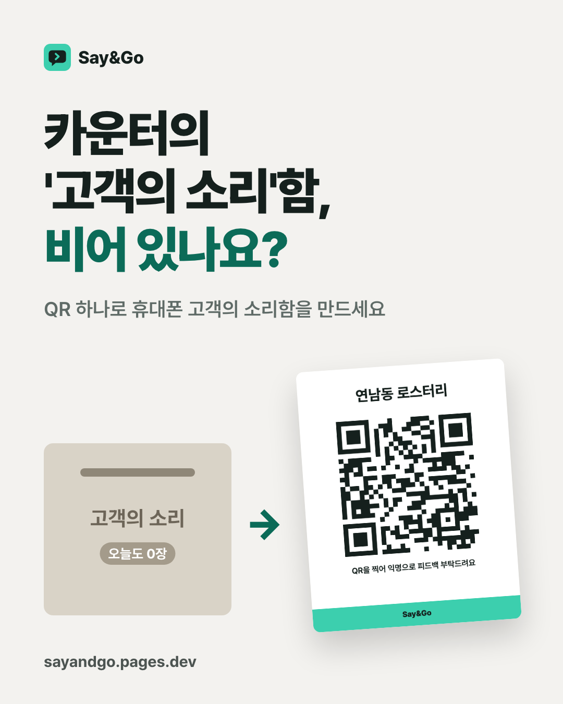
어울리는 이미지: docs/threads/card1-v3.png
다음에 할 것
첫 매장에서 실제 피드백이 오면, 사장님 동의를 받아 "실제로 받은 쓴소리와 고친 것" 글로 이어 갑니다. 그때부터가 진짜 사례입니다.
2주 뒤 Threads 통계(조회 · 댓글 · 프로필 방문)와 방문 분석(가입 화면 방문)을 같이 보고 잘된 글 방향으로 다음 글을 씁니다.